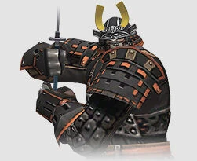

Level 75 reference · Zenith rules
Job Overview
|

|

Job Abilities
|
Job Traits
|
Combat Skill Ratings
| Skill | Skill Ranking | Cap at Level 1 | Cap at Level 37 | Cap at Level 75 |
|---|---|---|---|---|
| Great Katana | A+ | 6 | 114 | 276 |
| Polearm | B- | 5 | 109 | 240 |
| Sword | C+ | 5 | 105 | 230 |
| Club | E | 4 | 94 | 200 |
| Dagger | E | 4 | 94 | 200 |
| Archery | C+ | 5 | 105 | 230 |
| Throwing | C+ | 5 | 105 | 230 |
| Parrying | A- | 6 | 114 | 269 |
| Evasion | B+ | 5 | 109 | 256 |
See Samurai Skill Caps for a by-level breakdown of weapon skill limits.
Artifact Equipment
|
|
|
| ||||||||||||||||||||||||||||||||||||||||||||||||||||||||||||||||||||
Samurai Guides
Adapted from Eden Wiki: Samurai · Contributors and history · CC BY-SA 4.0. Revision 43284. Layout, links and optional background text adapted for Zenith.